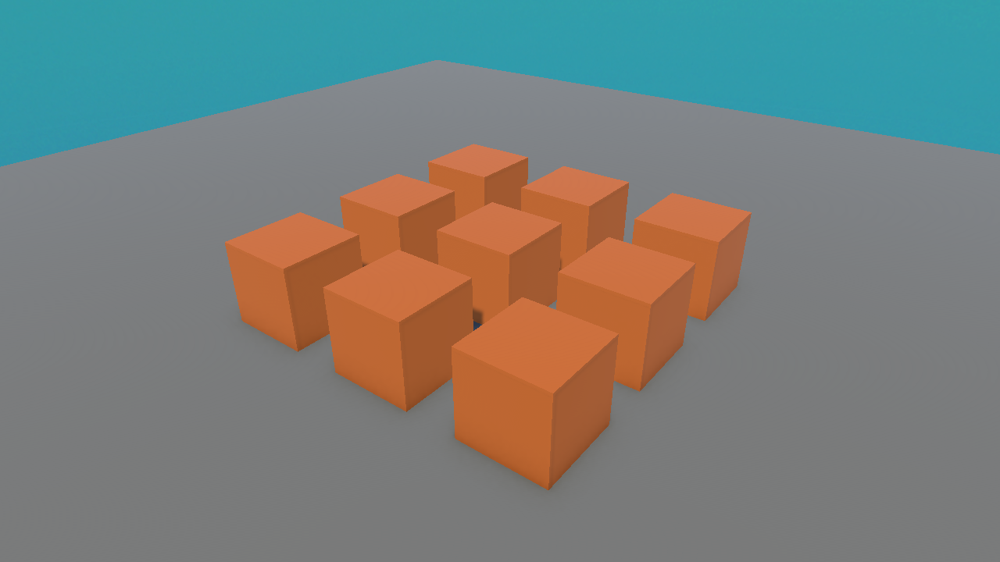

📦 Lesson 2.4: Prefabs — Reusable GameObjects
Imagine placing 50 identical coins, then deciding they should all be gold. Editing 50 objects by hand would be misery. Prefabs solve this: build one blueprint, reuse it everywhere, and edit them all at once.
🎯 Learning Objectives
- Explain what a Prefab is and why it saves enormous time
- Create a prefab by dragging a GameObject into the Project panel
- Place multiple instances of a prefab in a scene
- Edit the prefab once and update every instance
Estimated Time: 35 minutes
In This Lesson
The Problem Prefabs Solve
Here are nine identical crates. Suppose you want to change their colour, or give them all a Rigidbody, or resize them. Without prefabs you'd edit each crate nine times. With a prefab, you edit once and all nine update together:

What Is a Prefab?
📖 Definition
Prefab: a saved, reusable blueprint of a GameObject (with all its components and settings), stored as an asset in your Project. Copies you place in a scene are called instances, and they stay linked to the blueprint.
Think of a prefab as a cookie cutter and the instances as the cookies. Reshape the cutter and every future — and existing — cookie takes the new shape.
the blueprint asset] --> I1[Instance in scene] P --> I2[Instance in scene] P --> I3[Instance in scene] P --> I4[...many more]
Creating & Placing Prefabs
To create a prefab:
- Build a GameObject the way you want it (e.g. a Cube with an orange material, renamed
Crate). - Make a Prefabs folder in the Project panel (right-click ▸ Create ▸ Folder) to stay organized.
- Drag the
Cratefrom the Hierarchy into that folder. It becomes a prefab asset, and the Hierarchy entry turns blue (meaning "this is a prefab instance").
To place more instances: drag the prefab from the Project panel into the Scene view as many times as you like. Each is a linked copy.
💡 A blue GameObject name in the Hierarchy is your signal that it's a prefab instance. Plain (non-blue) means it's a one-off, not linked to any prefab.
Editing a Prefab
Double-click the prefab asset (or click Open in its Inspector) to enter Prefab Mode — an isolated editing view. Any change you make there applies to all instances everywhere.
✅ Overrides: per-instance tweaks
You can still customize a single instance (say, rotate one crate) without breaking the link — that's called an override, shown in bold in the Inspector. The rest of the instance still follows the prefab.
⚠️ Watch Out
Editing an instance directly in the scene only changes that instance (as an override). To change all instances, edit the prefab asset itself (Prefab Mode), not one instance.
Hands-on Exercise
🏋️ Exercise: Crate factory
- Make a Cube, give it an orange material, rename it
Crate. - Create a Prefabs folder and drag
Crateinto it to make the prefab. - Drag the prefab into the scene five more times; arrange them in a row.
- Open the prefab (Prefab Mode) and change its material to blue. Exit — all six crates are now blue.
💡 My crates didn't all change colour
You probably edited one instance in the scene instead of the prefab asset. Double-click the prefab in the Project panel to open Prefab Mode, then change the colour there.
🎯 Quick Quiz
Question 1: You edit the crate prefab asset and change its colour. What happens to the instances in your scene?
Question 2: In the Hierarchy, a prefab instance's name is shown in...
Summary
🎉 Key Takeaways
- A prefab is a reusable GameObject blueprint saved as an asset.
- Copies in a scene are instances, linked to the prefab.
- Create one by dragging a GameObject into the Project panel; place more by dragging it out.
- Edit the prefab (Prefab Mode) to update every instance; per-instance overrides show in bold.
🚀 What's Next?
You can build and arrange scenes now. Time to make things behave. Module 3 begins your journey into C# scripting — starting gently with your very first script.
🎉 Module 2 complete!
GameObjects, components, transforms, materials, prefabs — the whole building toolkit. Next: code.